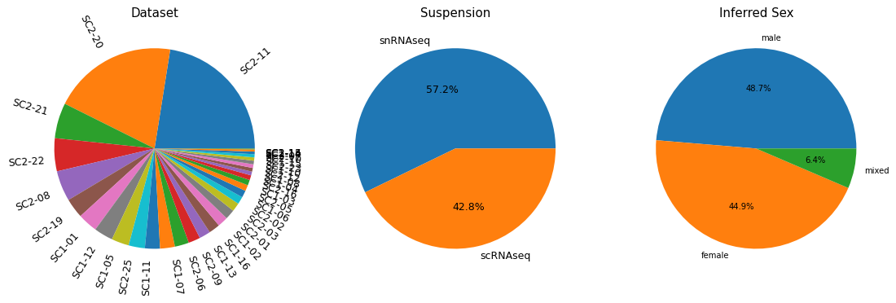
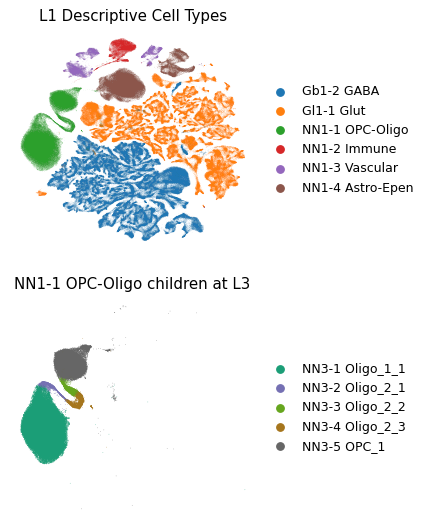
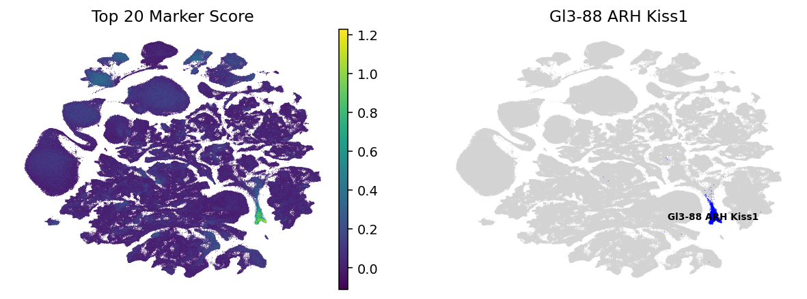
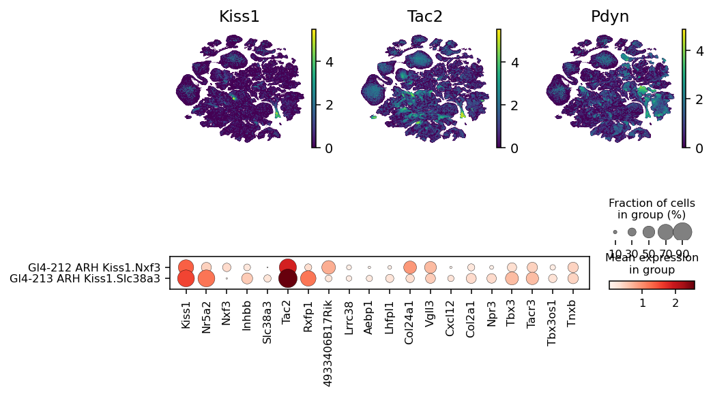
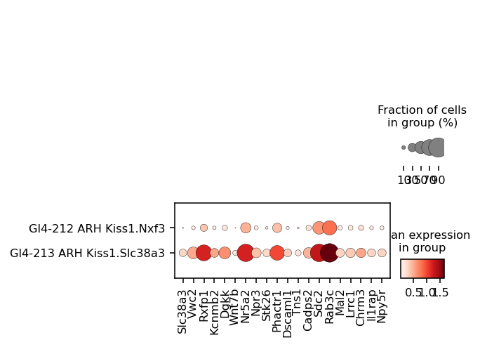

Single Cell Exploration#
This tutorial demonstrates how to handle the single cell reference atlas AnnData for the exploration of hypothalamic populations.
In this notebook, we will:
Load and normalize the control single-cell dataset
Explore cell-level metadata (dataset, suspension, inferred sex)
Visualize hierarchical cluster assignments on UMAPs
Identify and validate marker genes for a biologically relevant population (KNDy neurons in the arcuate nucleus)
Requirements:
matplotlibandscanpypython packages.HypoMap3D’s marker gene table and full single cell object.
This tutorial assumes basic familiarity with Scanpy and AnnData objects.
[1]:
# Enable automatic reloading of modules during interactive work (optional)
%load_ext autoreload
%autoreload 2
[2]:
import matplotlib.pyplot as plt
import pandas as pd
import scanpy as sc
# Conversion factor: millimeters to inches (for publication-style figures)
MM = 1 / 25.4
[ ]:
# Set the path to each the required objects
FP_SC_ANNDATA = r'REPLACE FILEPATH HERE'
FP_MARKER_TABLE = r'REPLACE FILEPATH HERE'
Loading the single-cell dataset#
We load the control single-cell dataset provided as an AnnData (.h5ad) file. This object includes:
Gene expression raw counts (
adata.X)Cell-level metadata (
adata.obs)Precomputed embeddings such as UMAP (
adata.obsm)
[ ]:
# Loading the control dataset via scanpy
adata = sc.read_h5ad(FP_SC_ANNDATA)
# Subset to only control cells
adata = adata[adata.obs['IsControl']].copy()
adata
AnnData object with n_obs × n_vars = 896959 × 56939
obs: 'CellID', 'Dataset', 'Sample', 'total_counts', 'n_genes', 'pct_mito', 'Author', 'Source', 'Data_source_link', 'GEO', 'Publication_Link', 'Suspension', 'Technology', 'Author_Sex_harmonized', 'sex_per_sample_inferred', 'Strain', 'Diet', 'Treatment', 'Age', 'Mean_age_in_weeks', 'IsControl', 'L1_ID', 'L2_ID', 'L3_ID', 'L4_ID', 'L5_ID', 'L1_descr', 'L2_descr', 'L3_descr', 'L4_descr', 'L5_descr', 'L1_abc_like', 'L2_abc_like', 'L3_abc_like', 'L4_abc_like', 'L5_abc_like'
var: 'gene_ids', 'IsMouseTF', 'IsHumanTFOrtholog', 'IsSourceGene', 'IsTargetGene', 'IsHvgExcludedGene', 'IsAnnotationExcludedGene', 'IsPriorityGene', 'IsTopGene', 'IsHvg'
obsm: 'X_embed', 'X_spatial_umap', 'X_umap'
Normalization and transformation#
For visualization and downstream exploratory analysis, we normalize the data:
Normalize total counts per cell to 10,000 (CP10k)
Apply a log1p transformation
This is a standard Scanpy preprocessing workflow for visualization.
[5]:
sc.pp.normalize_total(adata, target_sum=10_000)
sc.pp.log1p(adata)
Accessing cell metadata#
Cell-level metadata are stored in adata.obs. These include:
Quality control metrics e.g. total_counts, and pct_mito
Sample annotations e.g. Dataset, Sample, and Suspension
Biological annotations e.g. cluster assignments
Below, we explore the distribution of:
Dataset
Suspension
Inferred sex
[6]:
# Preview cell metadata
adata.obs.head(4)
[6]:
| CellID | Dataset | Sample | total_counts | n_genes | pct_mito | Author | Source | Data_source_link | GEO | ... | L1_descr | L2_descr | L3_descr | L4_descr | L5_descr | L1_abc_like | L2_abc_like | L3_abc_like | L4_abc_like | L5_abc_like | |
|---|---|---|---|---|---|---|---|---|---|---|---|---|---|---|---|---|---|---|---|---|---|
| SC1-01_SAMN18754353_AAACCCACAACCAGAG | SC1-01_SAMN18754353_AAACCCACAACCAGAG | SC1-01 | SC1-01_SAMN18754353 | 17459.0 | 5884 | 0.131737 | Affinati | SRA | NaN | GSE172204 | ... | Gl1-1 Glut | Gl2-35 VMH Nr5a1.Acvr1c | Gl3-113 VMH Cobll1 | Gl4-290 VMH Cobll1.Vgll2 | Gl5-390 VMH Cobll1.Vgll2 | Gl1-1 Glut | Gl2-35 VMH Nr5a1 Acvr1c Glut | Gl3-113 VMH Nr5a1 Acvr1c Glut_3c | Gl4-290 VMH Nr5a1 Acvr1c Glut_3c-1 | Gl5-390 VMH Nr5a1 Acvr1c Glut_3c-1-1 |
| SC1-01_SAMN18754353_AAACCCAGTCATCTAG | SC1-01_SAMN18754353_AAACCCAGTCATCTAG | SC1-01 | SC1-01_SAMN18754353 | 17067.0 | 5727 | 0.117185 | Affinati | SRA | NaN | GSE172204 | ... | Gl1-1 Glut | Gl2-33 VMH Fezf1 | Gl3-107 VMH Npffr1 | Gl4-274 VMH Npffr1.Arhgap36 | Gl5-371 VMH Npffr1.Arhgap36.Htr1b | Gl1-1 Glut | Gl2-33 VMH Fezf1 Glut | Gl3-107 VMH Fezf1 Glut_2 | Gl4-274 VMH Fezf1 Glut_2-2 | Gl5-371 VMH Fezf1 Glut_2-2-1 |
| SC1-01_SAMN18754353_AAACGAAAGCAAGCCA | SC1-01_SAMN18754353_AAACGAAAGCAAGCCA | SC1-01 | SC1-01_SAMN18754353 | 11905.0 | 4965 | 0.201596 | Affinati | SRA | NaN | GSE172204 | ... | Gl1-1 Glut | Gl2-35 VMH Nr5a1.Acvr1c | Gl3-111 VMH Rai14 | Gl4-286 VMH Rai14.Evc2 | Gl5-386 VMH Rai14.Evc2 | Gl1-1 Glut | Gl2-35 VMH Nr5a1 Acvr1c Glut | Gl3-111 VMH Nr5a1 Acvr1c Glut_3a | Gl4-286 VMH Nr5a1 Acvr1c Glut_3a-4 | Gl5-386 VMH Nr5a1 Acvr1c Glut_3a-4-1 |
| SC1-01_SAMN18754353_AAACGAAGTGCGGCTT | SC1-01_SAMN18754353_AAACGAAGTGCGGCTT | SC1-01 | SC1-01_SAMN18754353 | 12268.0 | 5205 | 0.171177 | Affinati | SRA | NaN | GSE172204 | ... | Gl1-1 Glut | Gl2-35 VMH Nr5a1.Acvr1c | Gl3-113 VMH Cobll1 | Gl4-291 VMH Cobll1.Dgkk | Gl5-391 VMH Cobll1.Dgkk | Gl1-1 Glut | Gl2-35 VMH Nr5a1 Acvr1c Glut | Gl3-113 VMH Nr5a1 Acvr1c Glut_3c | Gl4-291 VMH Nr5a1 Acvr1c Glut_3c-2 | Gl5-391 VMH Nr5a1 Acvr1c Glut_3c-2-1 |
4 rows × 36 columns
[8]:
# Count cells per dataset
dataset_counts = adata.obs['Dataset'].value_counts()
# Count cells per suspension
suspension_counts = adata.obs['Suspension'].value_counts()
# Count cells per inferred sex
# Sex is inferred based on Uty and Xist expression using sample-wise thresholds
sex_counts = adata.obs['sex_per_sample_inferred'].value_counts()
[9]:
# Visualize metadata distributions using pie charts
fig, axes = plt.subplots(1, 3, figsize=(15,5), dpi=90)
# Dataset distribution ------------------------------------------------------ #
axes[0].pie(
dataset_counts.values,
labels=dataset_counts.index,
textprops=dict(size=10),
rotatelabels=True
)
axes[0].set_title('Dataset')
# Suspension distribution --------------------------------------------------- #
axes[1].pie(
suspension_counts.values,
labels=suspension_counts.index,
textprops=dict(size=10),
autopct='%1.1f%%'
)
axes[1].set_title('Suspension')
# Inferred sex distribution ------------------------------------------------- #
axes[2].pie(
sex_counts.values,
labels=sex_counts.index,
textprops=dict(size=8),
autopct='%1.1f%%'
)
axes[2].set_title('Inferred Sex')
plt.show()
plt.close(fig)

Cluster assignments#
HypoMap3D provides hierarchical cluster annotations stored in adata.obs. Each level is available in three complementary representations:
L*_ID→ short cluster IDs (e.g.Gl3-84)L*_descr→ human-readable taxonomic labelsL*_abc_like→ Allen Brain Atlas–compatible labels
Here, we visualize:
All Level 1 (L1) cell types
The Level 3 (L3) subclusters of a specific L1 population (
Gl1-8)
[14]:
adata.obs['L1_descr'].value_counts()
[14]:
L1_descr
Gb1-2 GABA 328018
Gl1-1 Glut 279075
NN1-1 OPC-Oligo 140839
NN1-4 Astro-Epen 108835
NN1-3 Vascular 22077
NN1-2 Immune 18115
Name: count, dtype: int64
[20]:
fig, axes = plt.subplots(2, 1, figsize=(90*MM, 180*MM), dpi=90)
# Full L1 UMAP --------------------------------------------------------------- #
sc.pl.umap(
adata,
color='L1_descr',
ax=axes[0],
show=False,
frameon=False,
title='L1 Descriptive Cell Types'
)
# Subset: NN1-1 OPC-Oligo cells and visualize their L3 children ------------------------ #
mask = adata.obs['L1_ID'] == 'NN1-1'
subset = adata[mask].copy() # Convert view to actual AnnData object
sc.pl.umap(
subset,
color='L3_descr',
ax=axes[1],
show=False,
frameon=False,
palette='Dark2',
title='NN1-1 OPC-Oligo children at L3'
)
plt.show()
plt.close()

Marker gene exploration: KNDy neurons#
One population highlighted in the HypoMap3D publication is the KNDy neurons located in the arcuate nucleus.
KNDy neurons are defined by co-expression of:
Kiss1 (Kisspeptin)
Tac2 (Neurokinin B)
Pdyn (Dynorphin)
Below, we identify the corresponding L3 cluster using precomputed marker genes.
[27]:
# Load marker genes (cluster vs all comparison)
df_markers = pd.read_csv(
FP_MARKER_TABLE
)
# Extract only markers genes with comparison OneVsAll
df_markers_vs_all = df_markers[
df_markers['comparison'] == 'OneVsAll'
]
[29]:
# Restrict to L3 clustering
df_L3_markers_vs_all = df_markers_vs_all[df_markers_vs_all['clustering'] == 'L3']
# Identify clusters expressing all three KNDy markers
kndy_clusters = (
df_L3_markers_vs_all
.groupby('celltype_descr')
.filter(lambda g: {'Kiss1', 'Tac2', 'Pdyn'}.issubset(g['gene_name']))
['celltype_descr']
.unique()
.tolist()
)
kndy_clusters # only one in arcuate nucleus -> KNDy neurons
[29]:
['Gl3-88 ARH Kiss1', 'Gl3-23 LHA Igf1']
[ ]:
# Extract the top 20 most specific markers for the KNDy cluster
top_20_markers = (
df_markers_vs_all[df_markers_vs_all['celltype_descr'] == 'Gl3-88 ARH Kiss1']
.sort_values('rank', ascending=True)
.head(20)['gene_name']
.tolist()
)
# Score all cells based on expression of these markers
sc.tl.score_genes(
adata,
gene_list=top_20_markers,
score_name='marker_score'
)
[31]:
# Visualize marker score and cluster location on UMAP
fig, axes = plt.subplots(1, 2, figsize=(270*MM, 90*MM), dpi=140)
# Marker score -------------------------------------------------------------- #
sc.pl.umap(
adata,
color='marker_score',
ax=axes[0],
show=False,
frameon=False,
title='Top 20 Marker Score',
s=1
)
# Highlight KNDy cluster ---------------------------------------------------- #
sc.pl.umap(
adata,
color='L3_descr',
groups=['Gl3-88 ARH Kiss1'],
ax=axes[1],
show=False,
frameon=False,
palette='gist_rainbow',
legend_loc='on data',
legend_fontsize=7,
title='Gl3-88 ARH Kiss1',
s=1,
na_in_legend=False
)
plt.show()
plt.close()

Subtype analysis at L4#
The KNDy population splits into multiple subtypes at L4. However, L3 marker genes alone provide limited discriminatory power.
Below, we:
Visualize expression of canonical KNDy genes
Examine subtype separation using dotplots
[32]:
mask = adata.obs['L3_descr'] == 'Gl3-88 ARH Kiss1'
mosaic = [
['Kiss1', 'Tac2', 'Pdyn'],
['dotplot', 'dotplot', 'dotplot']
]
fig, axes = plt.subplot_mosaic(
mosaic,
figsize=(180*MM, 90*MM),
dpi=140
)
# Gene expression UMAPs ----------------------------------------------------- #
for gene in ['Kiss1', 'Tac2', 'Pdyn']:
sc.pl.umap(
adata,
color=gene,
ax=axes[gene],
show=False,
frameon=False,
title=gene,
s=1
)
# Marker dotplot ------------------------------------------------------------ #
sc.pl.dotplot(
adata[mask],
var_names=top_20_markers,
groupby='L4_descr',
ax=axes['dotplot']
)
plt.show()
plt.close()

Improved subtype resolution using sister markers#
To better discriminate closely related subtypes, we use sister marker genes (markers defined by comparison against sibling clusters rather than all clusters).
[36]:
# Extract only markers genes with comparison OneVsSisters
df_markers_vs_sister = df_markers[
df_markers['comparison'] == 'OneVsSisters'
]
[41]:
# Select markers for a specific L4 subtype
subtype_markers = df_markers_vs_sister[
df_markers_vs_sister['celltype_descr'] == 'Gl4-213 ARH Kiss1.Slc38a3'
]
top_subtype_markers = (
subtype_markers
.sort_values('rank', ascending=True)
['gene_name']
.head(20)
.tolist()
)
fig, ax = plt.subplots(1, 1, figsize=(90*MM, 90*MM), dpi=140)
sc.pl.dotplot(
adata[mask],
var_names=top_subtype_markers,
groupby='L4_descr',
ax=ax
)
plt.show()
plt.close()
